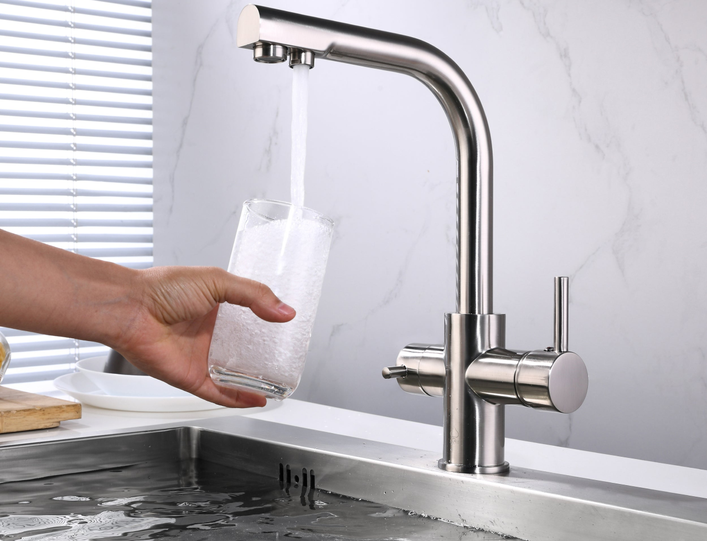
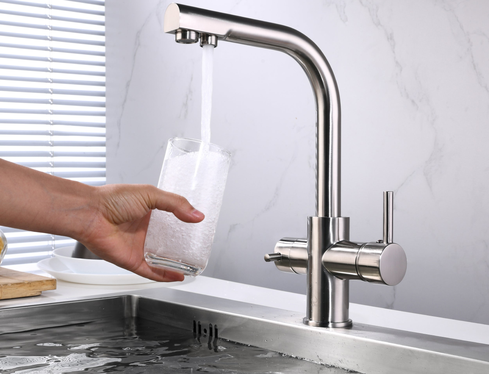

Water scarcity affects more than 40 percent of people, an alarming figure that is projected to rise as temperatures do. Although 2.1 billion people have improved water sanitation since 1990, dwindling drinking water supplies are affecting every continent.
More and more countries are experiencing water stress, and increasing drought and desertification is already worsening these trends. By 2050, it is projected that at least one in four people will suffer recurring water shortages.
39 percent of the global population, 2.9 billion people, had safe sanitation in 2015, but 2.3 billion people still lacked basic sanitation. 892 million people practiced open defecation.
What can we do to improve the situation?
Organize a clean up project for rivers and oceans. Engage your whole community to clean up a local river, seaside or an ocean.

Don’t overuse water. Make sure to close a tap when washing dishes, take short showers – Bathtubs require gallons more water than a 5-10 minute shower. Consider getting a water meter to be aware of your water usage.